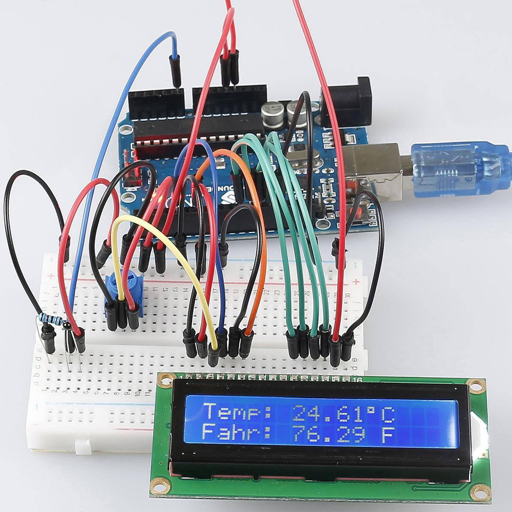

Lesson 15 Thermistor¶
Introduction¶
We’ve learnt many devices so far. To make more things, you need to have a good command of more knowledge. Today we’re going to meet a thermistor. It is similar to photoresistor in being able to change their resistance based on the outer change. Different from photoresistor, resistance of thermistor varies significantly with temperature in the outer environment.


Experimental Principle¶
Thermistor is a sensitive element, it has two types: Negative Temperature Coefficient (NTC) and Positive Temperature Coefficient (PTC), also NTC and PTC. Its resistance varies significantly with temperature. The resistance of PTC thermistor increases with higher temperature when that of NTC, decreases. In this experiment we use an NTC one.
The schematic diagram:

The principle is that the resistance of the NTC thermistor changes with the temperature difference in the outer environment. It detects the real-time temperature of the environment. When the temperature gets higher, the resistance of the thermistor decreases and the voltage of pin A0 increases accordingly. The voltage data then is converted to digital quantities by the A/D adapter. The temperature in Celsius and Fahrenheit then is output via programming and then displayed on LCD1602.
In this experiment a thermistor and a 10k pull-up resistor are used. Each thermistor has a normal resistance. Here it is 10k ohm, which is measured under 25 degree Celsius.
Here is the relation between the resistance and temperature change:
RT =RN expB(1/TK – 1/TN)
RT: resistance of the NTC thermistor when the temperature is TK.
RN: resistance of the NTC thermistor under the rated temperature which is TN.
TK is a Kelvin temperature and the unit is K.
TN is a rated Kelvin temperature; the unit is K, also.
And, beta, here is the material constant of NTC thermistor, also called heat sensitivity index.
exp is short for exponential, an exponential with the base number e, which is a natural number and equals 2.7 approximately.
Note that this relation is an empirical formula. It is accurate only when the temperature and resistance are within the effective range.
Since TK =T+273, T is Celsius temperature, the relation between resistance and temperature change can be transformed into this:
R =Ro expB[1/(T+273) – 1/(To+273)]
B, short for beta, is a constant. Here it is 4090. Ro is 10k ohms and To is 25 degrees Celsius. The data can be found in the datasheet of thermistor. Again, the above relation can be transformed into one to evaluate temperature:
T= B/[ ln(R/ 10) + (B/ 298) ] – 273 (So ln here means natural logarithm, a logarithm to the base e)
If we use a resistor with fixed resistance as 10k ohms, we can calculate the voltage of the analog input pin A0 with this formula:
V =10k x 5/(R+10K)
So, this relation can be formed:
R = (5 x 10k /V) - 10k
The voltage of A0 is transformed via A/D adaptor into a digital number a.
a=V x (1024/5)
V=a/205
Then replace V in the relation R = (5 x 10k /V) - 10k with the expression, and we can get this: R=1025 x 10k/a-10k.
Finally replace R in the formula here T= B/[ ln(R/ 10) + (B/ 298) ] – 273, which is formed just now. Then we at last get the relation for temperature as this:
T =B/[ ln{[ 1025 X 10/a) - 10]/10} 十(B/298)] – 273
Experimental Procedures¶
Step 1: Build the circuit
Step 2: Open the code file.
Step 3: Select the Board and Port.
Step 4: Upload the sketch to the board.

Now, you can see the current temperature displayed both in Celsius and Fahrenheit degrees on the LCD1602.
{kind=link}
Code¶
Code Analysis 15-1 Set the variables¶
#define analogPin A0 //the thermistor attach to
#define beta 3950 //the beta of the thermistor
#define resistance 10 //the value of the pull-up resistor
Define the beta coefficient as 3950, which is described in the datasheet of thermistor.
Code Analysis 15-2 Get the temperature¶
long a = analogRead(analogPin); //Read the resistance value of the
thermistor to a via the signal from the analog pin. Here use a long type
to make the value of a to be a long integer.
float tempC = beta / (log((1025.0 \* 10 / a - 10) / 10) + beta / 298.0)
- 273.0; //The formula here is to calculate the temperature in Celsius,
which we deduced previously.
float tempF = 1.8 \* tempC + 32.0; //define the temperature in
Fahrenheit. As we know Fahrenheit equals to 1.8 \* Celsius + 32.
Code Analysis 15-3 Display the temperature on LCD1602¶
lcd.setCursor(0, 0); // set the cursor to column 0, line 0
lcd.print("Temp: ");// Print a message of "Temp: "to the LCD.
lcd.print(tempC); //Print the tempC value on display.
lcd.print(char(223));//print the unit" ° "
lcd.print("C");
// (note: line 1 is the second row, since counting begins with 0):
lcd.setCursor(0, 1); // set the cursor to column 0, line 1
lcd.print("Fahr: ");
lcd.print(tempF);// Print a Fahrenheit temperature to the LCD.
lcd.print(" F"); // Print the unit of the Fahrenheit temperature to the
LCD.
delay(200); //wait for 100 milliseconds